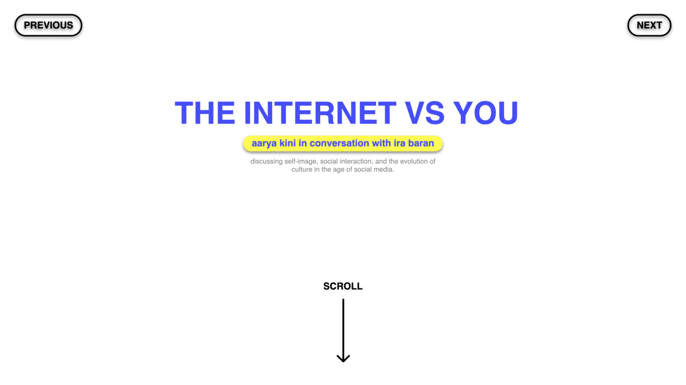

My partner for this project was my classmate Ira Baran. The questions I asked her during my interview all centred on her experience with social media, hence the aesthetic of my website is intended to mimic the minmalist, seamless experience of traversing through social media, or a messaging platform.
Skills Used
css stylesheets, linking fonts, flexbox, background gradients, favicon, changing cursors
Project Links